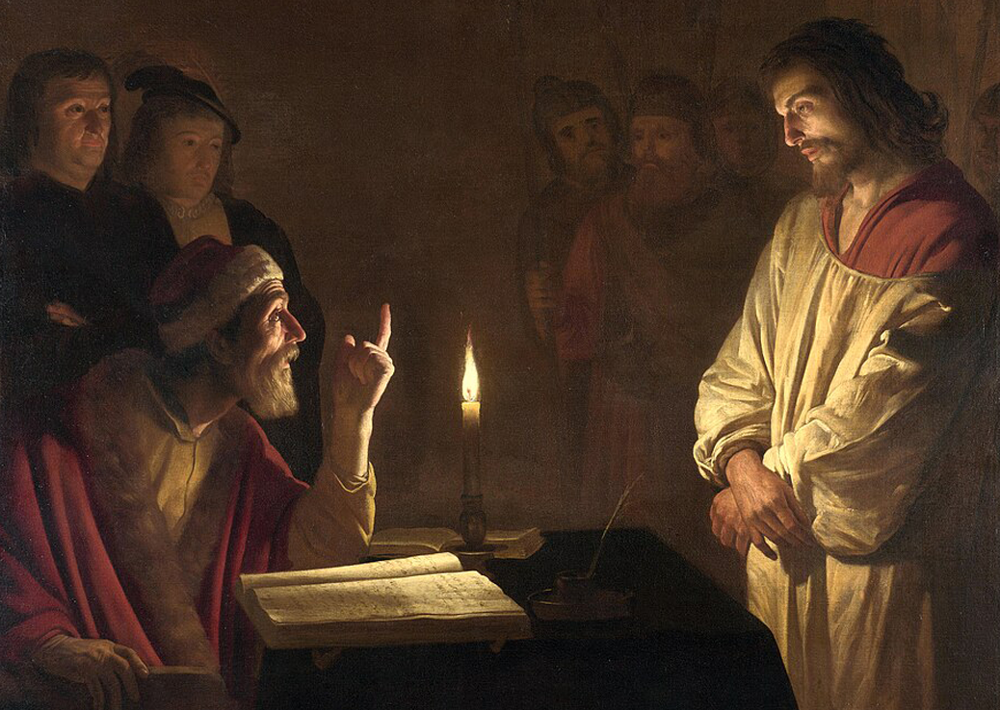

"Não fosse o olho semelhante ao sol, jamais poderia o sol contemplar; não houvesse em nós a força do próprio divino, como poderia o divino nos arrebatar?" — Johann Wolfgang von Goethe, Doutrina das Cores (versos a partir de Plotino)
Introdução: O olho um tanto solar
Goethe abriu sua Doutrina das Cores com esses versos, e neles indicou uma intuição muito mais antiga, de Plotino: só enxergamos o sol porque existe algo de solar no próprio olho. Entre quem vê e aquilo que é visto, há um parentesco secreto. Guarde essa ideia e fique, agora, diante de uma tela de Georges de La Tour.

Uma única vela; em torno dela, um rosto, duas mãos, a penumbra escorrendo para o escuro. A luz parece viva, você quase jura que poderia queimar os dedos nela. E, no entanto, o pintor não fazia a menor ideia do que era um fóton. Não conhecia fluxo luminoso, nem a lei do inverso do quadrado. Tinha apenas dois instrumentos: o olho e a mão. Os grandes mestres da pintura foram, sem jamais escrever uma única equação, físicos da luz. Talvez Goethe tivesse razão, e o olho desses pintores fosse, ele próprio, um tanto solar.
Repare, porém, num detalhe. Goethe condensou Plotino num único par de olhos e num único sol; o original ia mais longe: "o olho jamais teria contemplado o sol se não se tivesse feito, ele mesmo, semelhante ao sol; nem a alma vê a beleza sem antes tornar-se bela". Não se trata só de luz, mas de beleza, e é nesse ponto exato que a física encontra a arte. Fica, assim, a pergunta: sem fotômetro, sem equação, como esses pintores acertaram o comportamento da luz com tamanha precisão? A resposta, veremos, é que eles não a calcularam. Eles a olharam, e o que se segue é uma tentativa de reler, com olhos de física, aquilo que os olhos deles viram primeiro.
O Tratado Que Ninguém Escreveu
Há um jeito de olhar para um quadro antigo que não começa pela tela, mas sim pelo pintor, antes mesmo dele pegar o pincel. Ele olha. Repara como a luz perde força ao se afastar da vela, como o cetim devolve mais brilho que o pano grosso, como o contorno de um rosto se desfaz ao escorregar para a sombra. Tudo isso é um processo de percepção, uma percepção tão treinada pela prática, que se torna quase instinto. E é aí que o espanto começa, porque tudo aquilo que ele observa, obedece a leis exatas. A luz tem suas equações; a sombra, sua geometria. E ele as respeitou todas. O pintor representa a natureza em sua mais pura essência, não por conhecê-la, mas por ter olhado com atenção suficiente.
A luz é um fenômeno físico descrito pelas Equações de Maxwell, um conjunto de quatro leis que, juntas, explicam como campos elétricos e magnéticos se propagam pelo espaço. Em termos simples: a luz é uma onda, e como toda onda, ela carrega energia, viaja em linha reta, se espalha ao encontrar obstáculos e se enfraquece com a distância. O que vemos com os olhos, cores, brilhos, sombras, é apenas a nossa forma de perceber variações nessa energia. E o pintor, sem saber dessa linguagem, conhecia a natureza.
Agora, vamos analisar algumas obras de pintores que conseguiram representar a luz com maestria. Cada tela que vamos ver carrega escondida uma lei diferente da natureza. Começamos pela mais simples: a maneira como a luz se apaga à medida que se afasta de sua fonte.
A queda da Luz: Christ before the High Priest
Vamos começar a nossa analise com a obra "Christ before the High Priest" do pintor Gerard van Honthorst. Esta pintura é um exemplo notável de como a luz pode ser manipulada para criar drama e profundidade.
Em sua obra, de cerca de 1617, van Honthorst arma toda a cena do julgamento de Jesus em torno de um único objeto: uma vela, acesa bem no centro da mesa. De um lado, o sumo sacerdote ergue o dedo numa acusação; do outro, Cristo, de túnica clara, escuta calado.

A luz incide sobre a cena, criando um jogo de sombras e iluminações que revela a tensão dramática do momento. O olhar de Cristo, sereno e firme, contrasta com a agitação dos personagens ao seu redor. A luz não apenas ilumina, mas também narra, guiando o espectador pela história contada na tela.

A vela é o ponto focal de toda a composição. Essa distribuição da luz divide toda a cena em camadas. Tudo ao redor, o ambiente, o alto do quadro, afunda num breu quase total. É uma cena inteira governada por uma chama só. E é justamente aí que se esconde a física: por que, a partir daquela vela, o mundo do quadro escurece tão depressa?
Fisicamente é uma das leis mais simples da natureza: a lei do inverso do quadrado. Imagine a chama não como um ponto que brilha, mas como uma fonte que sopra luz para todos os lados ao mesmo tempo, numa bolha que não para de inchar.

A vela produz sempre a mesma quantidade de luz; mas, conforme a bolha cresce, essa mesma luz precisa cobrir uma superfície cada vez maior e, para isso, se estica e rareia. O detalhe é esse: a casca de uma esfera cresce em duas direções de uma só vez. Por isso, quando você se afasta até o dobro da distância da vela, a área a iluminar não dobra: quadruplica. A mesma luz repartida por quatro vezes mais espaço chega quatro vezes mais fraca. Vá até o triplo da distância e sobra um nono dela.
Volte agora os olhos para a tela, e você verá essa lei pintada. O rosto de Cristo e o do sacerdote estão a um palmo da chama: recebem a luz quase inteira, e ardem.

Os rostos logo atrás já se afastaram um pouco mais, e por isso afundam na penumbra, não porque Honthorst tenha decidido escondê-los, mas porque um passo a mais já lhes corta a luz a um quarto. Mais ao fundo, ao triplo, ao quádruplo, resta tão pouca claridade que a escuridão vence.

O espantoso é como ele chegou até aqui. A lei já existia, tinha, na verdade, acabado de nascer. Em 1604, um astrônomo chamado Johannes Kepler a escrevera pela primeira vez, em latim, num tratado de óptica, e pela mesma geometria da bolha: a luz repartida sobre esferas cada vez maiores, enfraquecendo com o quadrado da distância. Mas essa lei vivia em observatórios, não em ateliês. Honthorst, que tinha doze anos quando o livro saiu, e quase certamente nunca o leu, chegou à mesma verdade pelo lado oposto: não raciocinando sobre esferas, mas olhando. Na mesma época, dois homens seguravam a mesma lei sem saber um do outro: um a escreveu em geometria; o outro, em tinta.
E por que a tela ainda nos convence, quatro séculos depois? Pelo mesmo motivo: o nosso olho também obedece a essa lei. Ele se formou, ao longo de milhões de anos, sob uma luz que sempre se apagou desse jeito. O pintor não resolveu as equações da luz; resolveu algo mais simples e mais antigo, que todo olho atento carrega. Essa é a primeira prova pendurada na parede. Mas a distância faz mais do que apagar a luz, ela também a tinge. E, para ver isso, vamos soprar a vela, abrir uma janela para a paisagem e trocar o sumo sacerdote pelo sorriso mais famoso da história.
O Azul da Distância: Mona Lisa
A nossa segunda obra é, provavelmente, o quadro mais famoso já pintado: a Mona Lisa, de Leonardo da Vinci. E ela traz uma diferença fundamental da proposta de Honthorst: Honthorst acertou a física sem saber que ela existia; Leonardo, não. Leonardo olhou, pintou e depois sentou-se para escrever por que aquilo acontecia.

Leonardo começou a pintá-la por volta de 1503, em Florença, e a carregou consigo por mais de uma década, retocando-a até o fim da vida, há quem diga que nunca a deu por terminada. É um retrato a óleo sobre uma fina tábua de álamo, de pouco mais de setenta centímetros de altura. A mulher é quase certamente Lisa Gherardini, esposa do comerciante de seda Francesco del Giocondo, daí os nomes pelos quais o quadro também é conhecido: La Gioconda, em italiano, La Joconde, em francês. Hoje ela vive atrás de um vidro, no Louvre, sob o olhar de milhões de pessoas por ano.
O que torna a Mona Lisa inesquecível não é o enredo, não há enredo. É uma mulher sentada, as mãos cruzadas, um sorriso que parece mudar conforme você o encara. Esse sorriso esquivo é obra do sfumato, palavra que vem de "esfumaçar": em vez de contornos nítidos, Leonardo dissolve as passagens entre luz e sombra em camadas finíssimas de tinta, como fumaça, até que nenhuma linha dura reste no rosto.

Mas é atrás dela, no fundo, que mora a física que nos interessa aqui. Por sobre os ombros de Lisa abre-se uma paisagem imaginária, caminhos, um rio, uma ponte e, ao longe, montanhas. E essas montanhas distantes não são cinzas nem marrons: são azuis, dissolvidas numa bruma pálida, como se o ar as tivesse apagado pela metade.
Esse azul tem causa, e a causa é o próprio ar. Entre os seus olhos e uma montanha distante há quilômetros de atmosfera, e o ar não é o nada transparente que parece de perto. Ele é feito de incontáveis moléculas e gotículas que interceptam a luz do sol e a reespalham para todos os lados. Acontece que esse espalhamento não trata todas as cores por igual: a luz azul, de onda mais curta, é desviada muito mais que a vermelha. Por isso, quanto mais ar se interpõe, mais luz azul é devolvida ao seu olho ao longo do caminho, um véu luminoso que se acumula no espaço aparentemente vazio e encobre o que está atrás. A montanha perde cor, perde contraste e ganha o azul do próprio ar. É a mesma razão pela qual o céu é azul: você não está vendo bem a montanha, está vendo o ar iluminado na frente dela.

E aqui está o feito de Leonardo. Ele não apenas pintou esse azul: ele o estudou. Nos seus cadernos, batizou o fenômeno de "perspectiva aérea" e anotou a regra, os objetos mais remotos, escreveu, parecem azuis e quase da mesma cor da atmosfera, por causa da grande quantidade de ar entre eles e o olho. Chegou a dar uma receita: se você quer que algo pareça cinco vezes mais distante, pinte-o cinco vezes mais azul. E foi além de todos os seus contemporâneos ao apontar a causa certa, não o objeto, mas o ar no caminho. Faltavam mais de três séculos para que um físico inglês, Lord Rayleigh, explicasse por que justamente o azul se espalha mais. Leonardo não tinha a equação. Tinha algo que, no fundo, é mais raro: o olho que vê o fenômeno e a mente que pergunta por quê.
Duas obras, então, e duas faces da distância: no Honthorst, ela apaga a luz; na Mona Lisa, ela a tinge. Mas a luz ainda guarda um truque que nenhum dos dois mostrou — o instante em que ela se concentra num único ponto e devolve forma. Para vê-lo, vamos da paisagem imensa de Leonardo a um detalhe minúsculo: a mão de um coletor de impostos, num porão de Roma, no início do século XVII.
A Luz que Esculpe: A Vocação de São Mateus
A nossa terceira e última obra nos leva a uma igreja de Roma, onde, há mais de quatro séculos, está pendurada A Vocação de São Mateus em inglês, The Calling of Saint Matthew, de Michelangelo Merisi, o Caravaggio. Se Honthorst nos mostrou a luz que se apaga, e Leonardo a luz que se tinge, Caravaggio nos mostra a terceira face do fenômeno: a luz que dá forma.

Aqui não importa quanto a luz cai, nem de que cor ela fica, mas a direção de onde ela vem e como, ao tocar cada rosto num ângulo diferente, ela arranca do escuro corpos inteiros.
Caravaggio a pintou entre 1599 e 1600, ainda com menos de trinta anos, e ela foi a sua primeira grande encomenda pública, o trabalho que o tornou célebre quase da noite para o dia. O cardeal francês Matteo Contarelli havia deixado em testamento dinheiro e instruções para decorar uma capela dedicada ao seu santo homônimo, São Mateus; coube a Caravaggio pintar duas das três telas. A Vocação ocupa a parede esquerda da Capela Contarelli, na igreja de San Luigi dei Francesi, e lá permanece até hoje, no mesmo lugar para o qual foi concebida.
A cena vem do Evangelho: Jesus passa diante de uma alfândega, vê Mateus, um coletor de impostos, e diz apenas "Segue-me". Caravaggio transporta tudo para o seu próprio tempo. Mateus e quatro homens estão sentados em torno de uma mesa, contando moedas, vestidos com a roupa garrida da Roma de 1600, num ambiente sombrio, quase um porão.
Pela direita entram Cristo e Pedro, e Cristo estende o braço, apontando para Mateus. O gesto da sua mão não é casual: repete, quase traço por traço, a mão de Deus que desperta Adão no teto da Capela Sistina, de Michelangelo, Cristo como o novo Adão. Há até uma deliciosa ambiguidade que os estudiosos discutem até hoje: quem, afinal, é Mateus? O homem barbado que aponta para o próprio peito, como a perguntar "eu?", ou o jovem de cabeça baixa, na ponta, absorto nas moedas? Mas o que costura a cena inteira não é nenhuma figura, é o feixe de luz.
Esse feixe entra pelo alto, à direita, logo acima de Cristo, e atravessa a tela na diagonal até cair sobre os rostos da mesa.

Repare numa diferença em relação à vela de Honthorst. A vela era uma fonte próxima e pequena, que jogava luz para todos os lados e se enfraquecia depressa.
O feixe de Caravaggio é o oposto: vem de longe, de uma fonte forte fora do quadro, e por isso chega quase em raios paralelos, como o sol entrando por uma fresta. A luz viaja em linha reta, e essa é a chave. Ela ilumina apenas o que está no seu caminho e deixa no escuro tudo o que se esconde atrás de um obstáculo. Por isso o quarto não se acende inteiro: a luz risca uma faixa pela cena, e o resto é sombra.
Mas o verdadeiro feito está no que esse feixe faz com a forma. Uma superfície fosca brilha mais quando encara a luz de frente, e vai escurecendo à medida que se vira para longe dela, quanto mais inclinada em relação ao raio, menos luz recolhe por pedaço.

É essa regra simples, e só ela, que transforma manchas de tinta em gente de carne e osso. A face de um homem voltada para o feixe acende; a outra metade, que se afasta dele, afunda na penumbra; e a passagem suave entre as duas, ao longo da curva da bochecha, é o que o nosso olho lê como volume, um rosto de verdade saltando para fora de uma superfície plana. Caravaggio não "colore" os homens: ele os esculpe, pondo cada plano do rosto e da mão no ângulo exato que a luz exige.
E como ele sabia onde pôr cada sombra? Não lendo tratados, pintando do natural. Caravaggio punha modelos de verdade numa sala escurecida, acendia uma única luz forte vinda do alto e copiava, com fidelidade quase obsessiva, exatamente o que aquela luz fazia. E há um detalhe que coroa tudo: na própria capela, ele alinhou o feixe pintado com a direção da única janela real que ilumina aquela parede. A luz da ficção e a luz da sala entram pelo mesmo ângulo, de modo que, quando o sol de Roma bate no quadro, a física da tela e a física do mundo concordam.
Três quadros, três pintores, três modos de conhecer a mesma luz: Honthorst, que obedeceu à lei sem saber que ela existia; Leonardo, que a viu e a escreveu; Caravaggio, que a armou como quem prepara um experimento. Nenhum dos três tinha as equações. Os três tinham os olhos.
No fim, talvez seja sempre a mesma coisa. Honthorst, Leonardo, Caravaggio, nenhum deles conhecia as leis que pintava e, ainda assim, acertou todas, porque havia em seus olhos algo já afinado com a luz que olhavam. É a velha intuição de Plotino, com que abrimos este texto: só enxergamos o sol porque existe, no próprio olho, alguma coisa de solar. O pintor não decifrou a luz, ele a reconheceu, como quem reencontra um parente. E é por isso que as suas telas ainda nos convencem: o nosso olho carrega o mesmo parentesco e responde, séculos depois, à luz que ali ficou guardada. Aprender a ver, no fundo, é só lembrar disso, de que, para encontrar a luz no mundo, é preciso já trazê-la, de algum modo, por dentro.